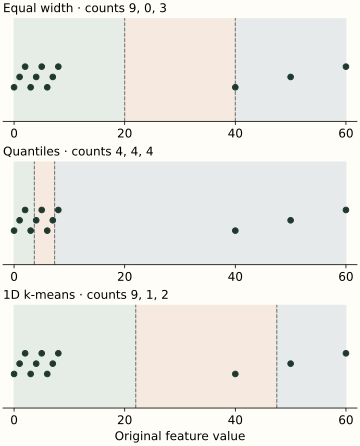

Binning and Discretization
Binning replaces a numeric value with the interval it belongs to. A waiting time of 17 minutes might become “10 to under 30 minutes.” This can make a relationship easier to model or summarize, but it deliberately removes the distinctions between values in the same interval.
There are two separate choices: where to place the boundaries, and how to encode the resulting interval. Keep them separate. Choosing good boundaries does not make the numeric labels 0, 1 and 2 the right inputs for every model.
Start with the boundary rule
Suppose the internal boundaries are 20 and 40. We label values below 20 as bin 0, values from 20 up to but excluding 40 as bin 1, and values of 40 or more as bin 2. A value exactly on a boundary enters the bin to its right.
This convention must be explicit: 39.999 and 40 fall into different bins. Here values beyond the training range stay in the first or last bin. Missing or nonfinite inputs need a separate handling policy; they should not silently become an ordinary bin.
Three ways to place the boundaries
Use the same twelve training values throughout this example: 0, 1, 2, 3, 4, 5, 6, 7, 8, 40, 50, 60. Nine values are tightly grouped near zero, with three farther away. Request three bins.
Equal width divides the training range into equal lengths. The range 0–60 gives boundaries at 20 and 40. This makes the intervals simple, but the middle bin contains no training observations.
Quantile binning aims for similar numbers of training observations per bin. With the linear quantile convention used here, its internal cuts are approximately 3.6667 and 7.3333. Each bin then contains four observations, while the last interval spans a much larger range.
One-dimensional k-means groups values around fitted centers. The three groups here have centers 4, 40 and 55. Midpoints between adjacent centers place the boundaries at 22 and 47.5. These bins follow the groups of nearby values, with counts 9, 1 and 2.

Optional: where did 3.6667 come from?
The first quantile is one third of the way through the sorted sample. Under linear interpolation its zero-based position is $(12-1)/3=3.6667$, between values 3 and 4. The interpolated value is therefore $3+(2/3)(4-3)=3.6667$. Other quantile conventions can give different cut points on a small sample. The code sets quantile_method='linear' explicitly so the example does not depend on a library default.
Place a new value into the fitted bins
Select a strategy, then enter a value. The cards show the training observations assigned to each bin. Your new value is classified using the stored cuts; it does not change the training counts or refit the bins.
Internal cuts: 20, 40.
A bin number is not a learned effect
Feeding a bin ID directly into linear regression gives a prediction of $b+w\times\mathrm{bin}$. Moving from bin 0 to 1 must change the prediction by the same amount as moving from 1 to 2. That is a strong assumption, even if the original intervals have very different widths.
One-hot encoding instead creates a column for each bin. A row activates only its own column. This lets a linear model learn a different level for every interval, including a pattern that rises and then falls.
A full one-hot encoding plus an intercept contains a redundant constant direction. Use an appropriate reference-bin encoding or intercept convention when coefficients must be uniquely interpretable. With multiple numeric features, binning each one and concatenating its indicators creates an additive model unless you also introduce interactions between features.
What binning removes, and what can go wrong
Values 40 and 60 share the last equal-width bin and therefore receive the same encoded row. Their exact difference is lost. Conversely, moving from 39.999 to 40 creates an abrupt feature change. Binning is useful when interval-level behavior is adequate; it is less suitable when small changes should produce smooth predictions.
Equal-frequency bins need not have equal counts when values are tied. Identical values cannot be split across deterministic intervals without introducing another rule. Repeated quantile boundaries may collapse, so the actual number of bins can be smaller than requested. Check the fitted edges and counts, especially for nearly constant fields.
Empty or rare bins provide little evidence for estimating an effect. Too many bins can overfit; too few can hide useful structure. Out-of-range values also collapse into the end bins under this convention. Monitor them separately if distinguishing an ordinary high value from a far-outside value matters.
Keep learned boundaries with the model
Quantiles and k-means centers are learned from data. Even equal-width boundaries depend on data when they use the observed minimum and maximum. Fit these on training rows, reuse them unchanged for validation and serving, and tune the strategy and bin count within the validation procedure.
Domain-defined thresholds are different: a rule fixed before inspecting the dataset need not be estimated from its values. Still validate whether that representation helps the prediction task. A preprocessing pipeline keeps learned bins attached to the model and refits them correctly within each fold.
Python: reproduce all three partitions and encode a new observation
import numpy as np
from sklearn.preprocessing import KBinsDiscretizer
X = np.array([0, 1, 2, 3, 4, 5, 6, 7, 8, 40, 50, 60]).reshape(-1, 1)
fitted = {}
for strategy in ('uniform', 'quantile', 'kmeans'):
binner = KBinsDiscretizer(
n_bins=3, strategy=strategy, encode='ordinal',
subsample=None, quantile_method='linear',
).fit(X)
fitted[strategy] = binner
ids = binner.transform(X)[:, 0].astype(int)
print(strategy, np.round(binner.bin_edges_[0], 4))
print(np.bincount(ids, minlength=binner.n_bins_[0]))
# Transform new values with the saved edges, without fitting again.
print(fitted['uniform'].transform([[20], [40], [80]]).ravel())
# [1. 2. 2.]
onehot = KBinsDiscretizer(
n_bins=3, strategy='uniform', encode='onehot-dense', subsample=None,
).fit(X)
print(onehot.transform([[50]])) # [[0. 0. 1.]]
The example fits all twelve rows by setting subsample=None. Larger datasets may use subsampling, in which case the fitted boundaries depend on that sample too. Inspect bin_edges_ and n_bins_. An inverse transform returns a representative point such as an interval midpoint; it cannot recover the original observation.
Apply saved boundaries in C++
Once the internal cuts are saved in increasing order, a binary search determines the bin. upper_bound counts cuts less than or equal to the new value, matching our “boundary goes right” convention. This implementation applies a fitted partition; it does not estimate quantiles or k-means centers.
C++17: explicit boundaries, including out-of-range values
#include <algorithm>
#include <cmath>
#include <iostream>
#include <stdexcept>
#include <vector>
#include <utility>
class FixedBinner {
std::vector<double> cuts_; // Internal boundaries only.
public:
explicit FixedBinner(std::vector<double> cuts) : cuts_(std::move(cuts)) {
for (std::size_t i = 0; i < cuts_.size(); ++i) {
if (!std::isfinite(cuts_[i]) || (i && cuts_[i] <= cuts_[i-1]))
throw std::invalid_argument("cuts must be finite and strictly increasing");
}
}
std::size_t transform(double x) const {
if (!std::isfinite(x)) throw std::invalid_argument("expected finite value");
return std::upper_bound(cuts_.begin(), cuts_.end(), x) - cuts_.begin();
}
};
int main() {
FixedBinner binner({20, 40});
for (double x : {-5, 0, 19, 20, 39, 40, 60, 80})
std::cout << binner.transform(x) << ' ';
std::cout << '\n'; // 0 0 0 1 1 2 2 2
}
Compare binning with the raw numeric feature, a low-degree polynomial or a suitable smooth basis using held-out performance. A tree already learns threshold splits, so a prior discretization may discard distinctions it could otherwise use.
References and further reading
- Scikit-learn: KBinsDiscretizer — strategy, encoding, quantile conventions, subsampling and collapsed bins.
- Scikit-learn: discretization strategies — visual comparisons of how different strategies partition data.
- Scikit-learn: discretized features with linear models and trees — how the model family changes the effect of a binned representation.
- NumPy: digitize — boundary inclusion and the relationship to binary search.